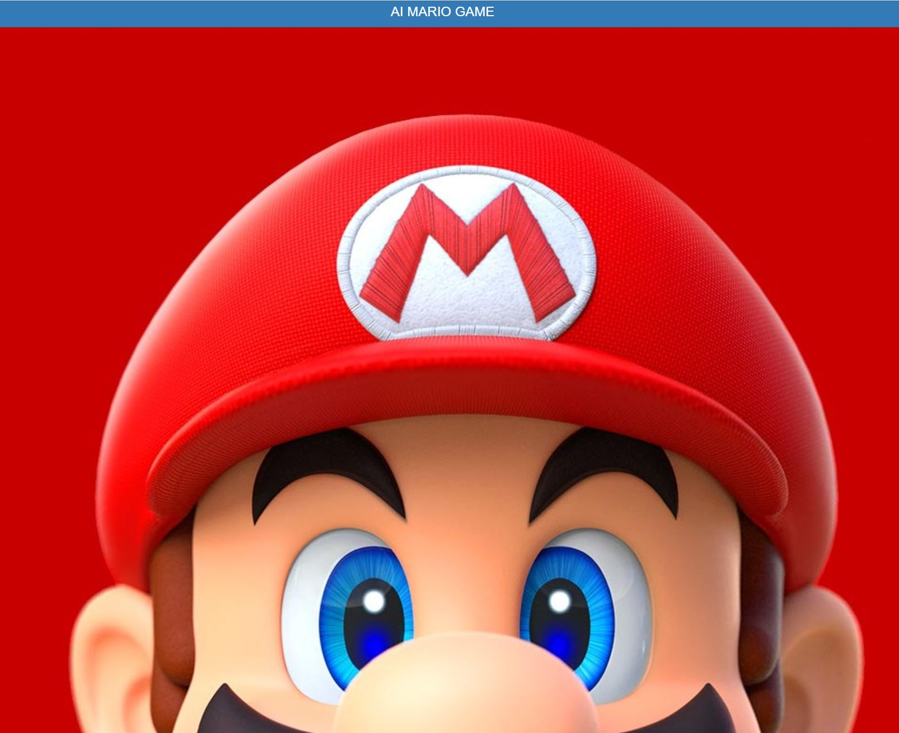
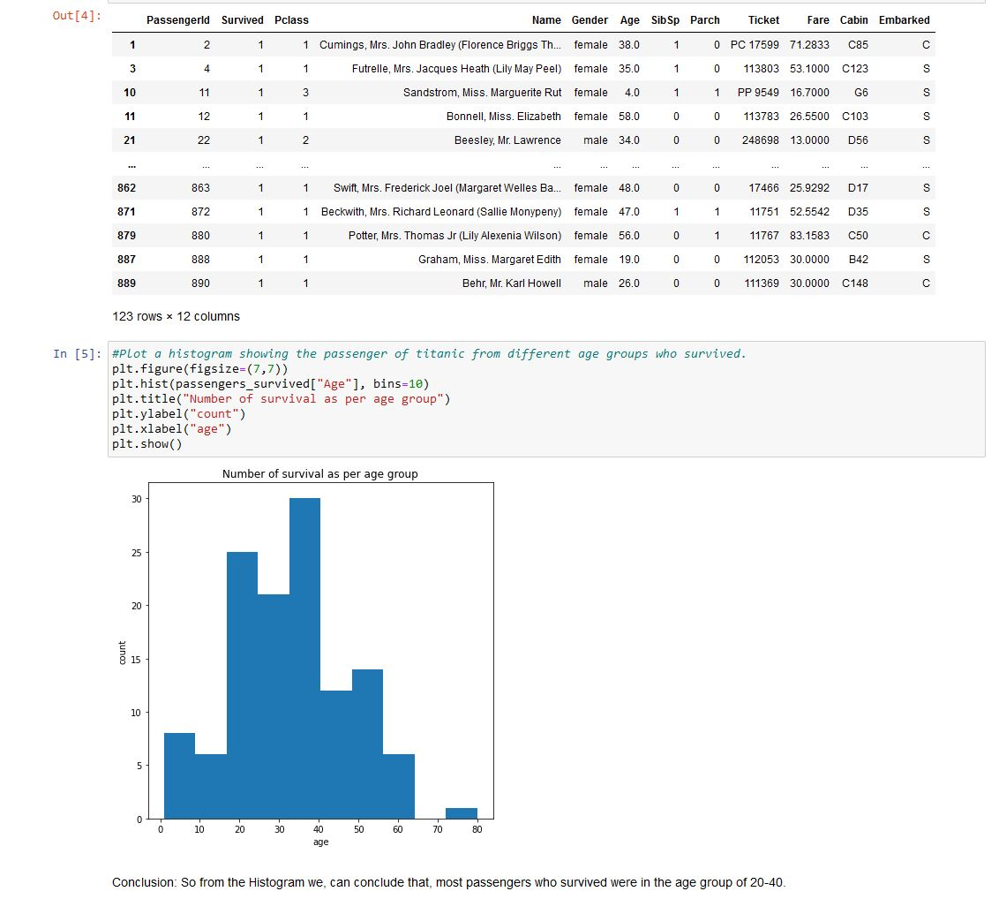
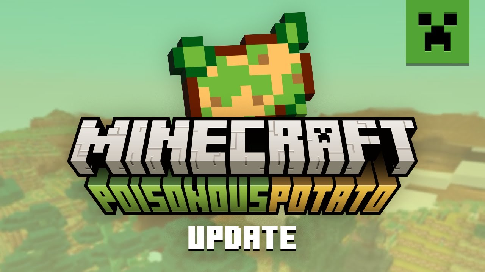

My Programs and Mods
This page shows some programs I have created and some mods you can try out I have used from other sources.
Programs and HTML
AI Mario Game
Statistics of the Titanic
World Clock of the USA and India

Planet Facts of the Solar System

Mods
Please note that some mods may require you to do the following instructions.
Kremlin 3D: A Wolfenstein mod
A heavily modified Wolfenstein game. This game is Windows and Linux native and can not be emulated on MS-DOS emulators such as DOSBox-X. This game is based on the current conflict and you are tasked as Zelenskyy, the Ukranian president to defeat Vladolf Putler and end his reign. Download link is below.

Minecraft: Poisonous Potato Mod
This mod is an April Fool's update to Minecraft's Java Edition, but also a mod to Bedrock Edition players (also to Pocket Edition). You immerse yourself into the world of unknown in the potato dimension filled with many new custom items and mobs. You can find this in Bedrock's marketplace.
